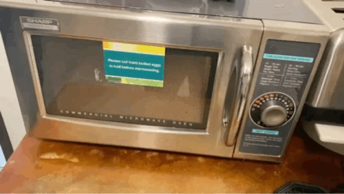

I found this microwave in my Work. I face some issue while trying to use this microwave. Myself having color deficiency issue with Red, Green and Yellow, I could not properly set the timer at first place.
• This microwave use color to indicate where the timer is set. This microwave is hard to use by color blindness people.
• This microwave also does not have the display screen where you can see how much time is remaining to cook or what operation is microwave performing.
• This microwave also does not have time display.
• This microwave also does not have proper warning message, Like for the use of steel dishes.
• I don’t like the handle of this microwave. From my personal experience I have seen such handle been broken after few months of use.
• Like in modern microwave this microwave does not have vent fan.
• Overall user interface is confusing. It does not have start or stop button which can be used to start or stop the Microwave.
• This microwave directly operates through power supply. There is no power buttion in microwave itself.

Fig 1.2: Microwave GIF image found in my work.
Uses of Microwave:
In today’s world microwaves are very widely and commonly used. These microwaves are used for different purpose. Some of them are listed below:
1. Reheating foods
2. Sometimes used for cooking (example potatoes)
3. Toasting Nuts and Spices
4. They are used for Disinfecting things like Sponges
5. Steaming vegetables
6. Warming beauty products
7. Warming things like Butter and Oil
8. Defrosting
9. Roasting (garlic, popcorn)
The Modern digital microwaves obviously make doing this common thing easier but at the same time some microwaves might make it confusing. The things like express button for Popcorn, Potatoes have already set timer in them so, people who do not know how much time it is needed to cook those items, may use the express button.
Some microwaves have two functionalities in the same button which might make users to use this microwave difficult.
Common sequence of action:
First, the user opens the door and place the food in microwave oven plate and close the door. Users have to select desire time to cook or if they are cooking anything that is in express button, they can select that key directly. If the food is not cooked or heated at that time, time can be added, and food can be cooked again.
How does the microwave support the user figure out how to make it work?
In microwave there are various button, such as start, stop, timer, door which obviously indicates the functionalities of those keys. In some microwave boxes there are some instruction to guide the users to how to use the microwaves. Also, in the display button it shows what operation is currently performed by the microwaves.
How does the microwave provide feedback to the user?
Microwaves provides the feedback to the user by displaying the work performed by the user in display user. There are some sound which comes after the certain operations are completed, which indicates that the operation are done.
What are some common mistakes you can make with this current design?
The microwave in the picture 1.1 have some difficulties using it.
• As mention earlier if people have color blindness it might be hard for them to set the timer because it uses color to indicate where the timer button is set.
• Using this current design people might struggle to start the microwave because there is no start and stop button.
• There is no warning signs for the materials that can be used in microwaves. People may use steel dishes which should not be used in microwaves
• People might get confused because there is no power button. First time user may look for the power button to turn this microwave on
Improvements to make on the control interface:
We can improve the current design by following ways:
• Use digital number keys for timer
• Instead of pulling handle we can make the sliding door
• Add some express button, so we don’t need to worry about setting timer
• Add some warning sign in the door about things that can and cannot be used in Microwaves
• Add power button to turn on or off microwave
• Add sound operation so that it will be friendly for disabled people
• Use display screen to show what operation is microwave is performing
• Display current time and date